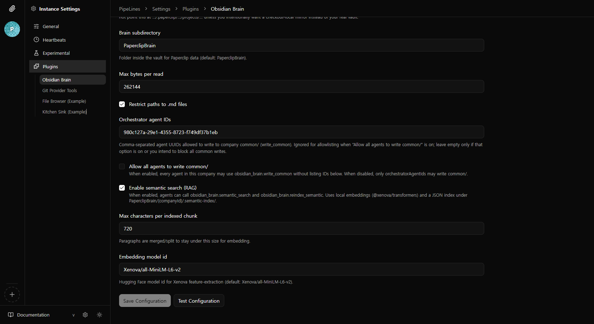
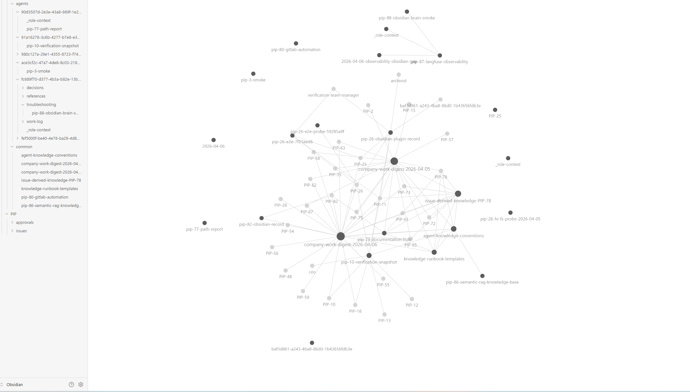

Obsidian 플러그인 — 지식 저장에서 RAG로
paperclip.obsidian-brain은 Obsidian 볼트 위 마크다운 지식 베이스를 에이전트에 연결합니다. 지식의 재사용성을 위해 도입했지만, 볼트가 커지며 토큰 폭증이 문제가 되어 RAG 시맨틱 검색을 추가한 과정입니다.
왜 RAG를 추가했는가
Obsidian 볼트를 지식 베이스로 쓰는 것 자체는 효과적이었습니다. 에이전트가 과거 작업 기록, 스킬, 회의 노트 등을 재사용할 수 있어 중복 작업이 줄었습니다. 문제는 볼트가 커질수록 나타났습니다.
-
초기: 지식 저장·재사용
에이전트가 학습한 내용을 마크다운 노트로 저장하고, 이후 작업에서
list→read로 가져와 재활용. 지식의 축적과 재사용은 잘 동작. - 문제 발견: 토큰 폭증 볼트가 수백 개 노트로 커지자, 에이전트가 "어떤 노트가 필요한지" 판단하는 데 토큰을 낭비. 틀리면 불필요한 전체 노트가 입력에 포함되어 비용이 급증.
- 해결: 시맨틱 검색(RAG) 도입 Xenova 임베딩으로 청크 벡터를 만들고, 질의 기반 코사인 유사도로 관련 상위 K개 청크만 반환. 에이전트가 노트를 고르는 대신 검색 시스템이 필터링.
지식 접근 방식 변화
list로 목록 확인 후read로 개별 노트 전체 읽기- 에이전트가 어떤 노트를 읽을지 판단 → 토큰 소모
- 볼트 크기 ∝ 입력 토큰 (통제 불가)
semantic_search(query)로 관련 청크만 반환- 검색 시스템이 필터링 → 에이전트 판단 불필요
- Top-K로 입력 크기 제한 (통제 가능)
Chroma, Pinecone 같은 외부 벡터 DB를 쓸 수 있었지만, 이 규모에서는 과잉입니다. .semantic-index/chunks.json 하나로 회사당 인덱스를 관리하면 의존성 제로·배포 단순·디버깅 직관적입니다. 볼트가 수만 노트로 커지면 그때 DB를 도입해도 늦지 않습니다.
UI 스크린샷
인스턴스 설정과 도구·워크플로 화면입니다.


논리 구성 (레이어)
보드 UI·API·워커·파일시스템·임베딩 파이프라인의 관계입니다.
| 레이어 | 역할 |
|---|---|
| 에이전트 설정 | 워크플로·AUTO-KNOWLEDGE 지시문을 하트비트 컨텍스트에 합성 |
| 플러그인 설정 | vaultRoot, semanticSearchEnabled, maxChunkChars, embeddingModelId |
| HTTP 도구 API | read / write / list / semantic_search / reindex_semantic |
| 워커 | 파일 I/O, 인덱스 읽기·쓰기, 임베딩 파이프라인 |
| Obsidian 앱 | 같은 폴더를 볼트로 열면 사람이 노트 편집 가능 (Paperclip RAG는 앱 없이도 동작) |
RAG 파이프라인
인덱스 구축 → 검색 → 쓰기 후 증분 재인덱스까지 한 시퀀스입니다.
청킹
마크다운을 빈 줄 기준 문단으로 분리한 뒤 maxChunkChars 이하로 병합·분할합니다.
임베딩
@xenova/transformers의 pipeline("feature-extraction")을 사용합니다. 기본 모델 Xenova/all-MiniLM-L6-v2, pooling: "mean", normalize: true → 고정 길이 벡터.
검색
질의 문자열을 임베딩한 뒤 인덱스 청크와 코사인 유사도 비교. 스코프(agent/common/both)에 맞는 청크만 후보. 상위 topK(기본 5, 최대 15) 반환.
디스크 레이아웃
{vaultRoot}/
{brainSubdir}/ # 기본값 PaperclipBrain
{companyId}/
agents/{agentId}/ # 에이전트별 노트
common/ # 공유 영역
.semantic-index/
chunks.json # RAG 인덱스 (청크 + 임베딩 벡터)
- 인덱스 파일:
version,modelId,updatedAt, 청크마다relFromCompany,text,embedding. - 인덱스는 회사 단위 하나. 스코프는 검색 시 경로 접두로 필터.
paperclip.obsidian-brain
RAG 도입 전후 (동작 관점)
에이전트가 지식을 가져오는 방식과 서버 측 부담이 어떻게 달라지는지 한눈에 비교합니다.
| 구분 | RAG 이전 | Xenova RAG 이후 |
|---|---|---|
| 검색 | 경로를 알고 read로 통째로 읽거나, 목록을 만든 뒤 순차 탐색 |
semantic_search로 질의를 임베딩한 뒤 청크 랭킹 |
| 서버 부담 | 디스크 I/O와 에이전트가 큰 컨텍스트로 LLM을 호출하는 비용 | 모델 로드·임베딩 CPU 부하와 chunks.json 읽기·쓰기 |
| 인덱스 | 없음 | PaperclipBrain/{companyId}/.semantic-index/chunks.json |
| 구현 | — | pipeline("feature-extraction", modelId) + mean pool + normalize (semantic-search.ts) |
로컬 프로파일 수치
참고 · 동일 스택 로컬 벤치워커와 동일 스택으로 로컬에서 돌린 벤치 스크립트 결과입니다. 머신·Node 버전에 따라 달라질 수 있습니다.
-
청킹만
~0.16 ms
chunkMarkdown· 약 1.6KB · 5청크 - 코사인 유사도 ~3.7 ms 500청크 × 384차원
- Xenova 첫 로드 ~4.46 s 프로세스 첫 로드는 캐시 여부와 무관하게 초 단위 지연 가능
- 쿼리 임베딩 8–22 ms 워밍 이후 · 짧은 문장
- 긴 쿼리 임베딩 ~109 ms 약 1625자
- 연속 5청크 임베딩 ~495 ms 합계 · 재인덱스에 가까움 · 평균 약 99 ms/청크
로그 예: packages/plugins/plugin-obsidian-brain/scripts/xenova-rag-profile-2026-04-11T11-50-06-780Z.log (Paperclip 플러그인 트리)
Obsidian 앱 검색 vs Paperclip RAG
같은 .md를 읽을 수 있어도, 인덱스는 동기화되지 않습니다.
| 구분 | Obsidian 앱 검색 | Paperclip RAG |
|---|---|---|
| 인덱스 | 앱·플러그인별 (Omnisearch 등) | 서버의 chunks.json + Xenova 임베딩 |
| 데이터 소스 | 볼트 내 전체 파일 | PaperclipBrain/{companyId}/... 트리 |
| 실행 위치 | 클라이언트 PC (앱) | Paperclip 서버 (워커 호스트) |
관련 코드 (진입점)
| 영역 | 경로 |
|---|---|
| 인덱스·검색·재인덱스 | packages/plugins/plugin-obsidian-brain/src/semantic-search.ts |
| 도구 등록 | packages/plugins/plugin-obsidian-brain/src/worker.ts |
| 볼트 경로 해석 | packages/plugins/plugin-obsidian-brain/src/brain-paths.ts |
| 매니페스트 스키마 | packages/plugins/plugin-obsidian-brain/src/manifest.ts |
| 하트비트 프롬프트 | server/src/services/obsidian-brain-workflow-prompt.ts |
운영 시 고려사항
- 인덱스 파일:
chunks.json은 회사 단위로 커질 수 있어 백업·동기화 정책에 포함하는 것이 좋습니다. - 모델·성능: Transformers.js 최초 로드·캐시 지연이 있고, CPU에서 대량 재인덱싱은 부하가 큽니다.
- 임베딩 모델 변경 시: 벡터 공간이 달라지므로 전체 재인덱싱이 필요합니다.
- 앱 vs 서버 RAG: 사람이 앱에서 수정한 노트와 서버 인덱스는 자동 동기화되지 않습니다.
reindex_semantic으로 갱신.